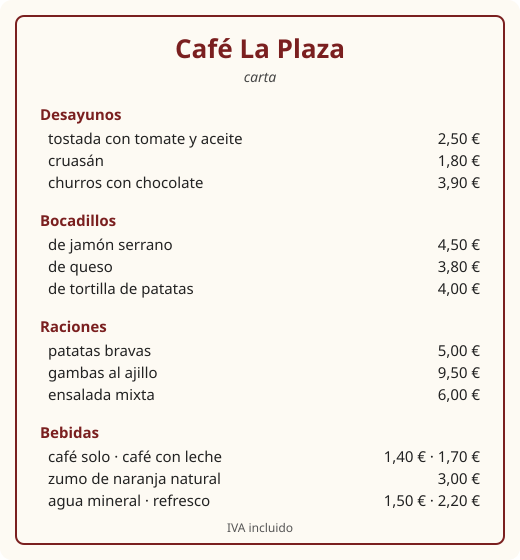

Lesson 8: Food and Ordering in a Café¶
La comida y el café
Food is one of the great pleasures of the Spanish-speaking world, and the café or bar is where you will practise your Spanish most. The language you need there is small and very repetitive: a handful of phrases for asking, a few dozen words for things to eat and drink, and the courage to call the waiter. In this lesson you learn to read a simple menu, order food and drink politely, ask what a dish contains, ask for the bill, and say what you like and do not like. You also learn when Spaniards, Mexicans and Argentinians actually eat, which may surprise you.
Learning outcomes
By the end of this lesson you will be able to:
- name common foods, drinks and meals;
- order in a café or restaurant with quiero, quisiera, ¿me pone …? and ¿me trae …?;
- ask what a dish contains, how much it costs, and for the bill;
- use nouns without an article for "some" (quiero agua) and with de, con and sin;
- say what you like and dislike with me gusta and no me gusta.
masculinefeminineplural
8.1 Dialogue: in a café in Salamanca¶
Lucía and Daniel go to a café on the main square after class. The waiter comes to their table.
- Camarero: Buenas tardes. ¿Qué les pongo? — Good afternoon. What can I get you?
- Lucía: Para mí, un café con leche, por favor. — For me, a white coffee, please.
- Daniel: Yo quiero un zumo de naranja. — I'd like an orange juice.
- Camarero: Muy bien. ¿Algo para comer? — Fine. Anything to eat?
- Daniel: Sí. ¿Qué lleva el bocadillo vegetal? — Yes. What's in the vegetable sandwich?
- Camarero: Lleva lechuga, tomate, huevo y mayonesa. — It has lettuce, tomato, egg and mayonnaise.
- Daniel: Vale, quisiera un bocadillo vegetal, pero sin mayonesa. — OK, I'd like a vegetable sandwich, but without mayonnaise.
- Lucía: ¿Me pone también una ración de patatas bravas? — Could I also have a portion of patatas bravas?
- Camarero: Por supuesto. ¿Algo más? — Of course. Anything else?
- Lucía: Nada más, gracias. — Nothing else, thanks.
- Daniel: Mmm, me gustan mucho las patatas bravas. ¡Pican un poco! — Mmm, I really like patatas bravas. They're a bit spicy!
- Lucía: ¡Perdone! ¿Nos trae la cuenta, por favor? — Excuse me! Could you bring us the bill, please?
- Camarero: Sí, ahora mismo. Son doce euros con cuarenta. — Yes, right away. That's twelve euros forty.
- Daniel: Hoy invito yo. — It's on me today.
- Lucía: ¡Gracias, Daniel! La próxima vez, invito yo. — Thanks, Daniel! Next time it's on me.
Notice:
- Nobody says "can I have". Spanish orders are direct: para mí, un café, quiero un zumo, ¿me pone …? Politeness comes from por favor, gracias and a friendly tone.
- ¿Qué lleva?, literally "What does it carry?", is how you ask what is in a dish.
- un zumo de naranja, un café con leche, sin mayonesa: three small prepositions do most of the work on a menu.
- me gustan las patatas: with a plural thing, gusta becomes gustan.
8.2 Vocabulary: food, drink and meals¶
Drinks¶
| Spanish | Sounds like | English |
|---|---|---|
| el café solo | [kah-FEH SOH-loh] | black coffee (an espresso) |
| el café con leche | [kah-FEH kohn LEH-cheh] | white coffee (half milk) |
| el cortado | [kor-TAH-doh] | espresso with a dash of milk |
| el té | [TEH] | tea |
| el agua (con gas / sin gas) | [AH-gwah] | water (sparkling / still) |
| el zumo de naranja | [THOO-moh deh nah-RAHN-hah] | orange juice (Spain) |
| el jugo de naranja | [HOO-goh] | orange juice (Latin America) |
| la leche | [LEH-cheh] | milk |
| el refresco | [rreh-FREHS-koh] | soft drink |
| la cerveza | [sehr-BEH-sah] | beer |
| el vino tinto / blanco | [BEE-noh TEEN-toh] | red / white wine |
| el chocolate caliente | [choh-koh-LAH-teh kah-LYEHN-teh] | hot chocolate |
Table 8.1. Drinks. In Spain, the z of zumo and cerveza has the th sound (Lesson 1).
El agua is feminine
agua is a feminine noun, but because it begins with a stressed a, it takes el in the singular, to avoid the clash la agua. Adjectives stay feminine: el agua fría ("cold water"), and the plural is las aguas. The same happens with el hambre ("hunger") and el aula ("classroom").
Food¶
| Spanish | English | Spanish | English |
|---|---|---|---|
| el pan | bread | la tostada | toast |
| el bocadillo | filled roll (Spain) | el sándwich | sandwich (sliced bread) |
| el queso | cheese | el jamón | ham |
| el huevo | egg | la tortilla | omelette (Spain); flatbread (Mexico) |
| la ensalada | salad | la sopa | soup |
| el pollo | chicken | la carne | meat |
| el pescado | fish (to eat) | el arroz | rice |
| las patatas | potatoes (Spain) | las papas | potatoes (Latin America, Canaries) |
| las patatas fritas | chips, crisps | las verduras | vegetables |
| la lechuga | lettuce | el tomate | tomato |
| la fruta | fruit | la manzana | apple |
| el plátano | banana | la naranja | orange |
| el postre | dessert | el helado | ice cream |
| la tarta | cake, tart | el azúcar | sugar |
| la sal | salt | el aceite de oliva | olive oil |
Table 8.2. Food. pescado is fish on the plate; a live fish in the water is un pez.
Meals and verbs¶
| Meal | Verb | When (roughly, in Spain) |
|---|---|---|
| el desayuno — breakfast | desayunar | 7 to 9 a.m., light: coffee and toast |
| el almuerzo — mid-morning snack (Spain); lunch (Latin America) | almorzar | about 11 a.m. in Spain |
| la comida — lunch, the main meal | comer | 2 to 3.30 p.m. |
| la merienda — afternoon snack | merendar | 5 to 7 p.m. |
| la cena — dinner, supper | cenar | 9 to 11 p.m. |
Table 8.3. The meals. comida also means "food" in general, and comer means both "to eat" and "to have lunch".
Use tomar ("to take") for "have" with food and drink: ¿Qué vas a tomar? — What are you having?; Tomo un té. — I'll have a tea.
In the café or restaurant¶
| Spanish | English |
|---|---|
| el camarero, la camarera | waiter, waitress (Spain) |
| el mesero, la mesera | waiter, waitress (Mexico, Central America) |
| la carta, el menú | the menu |
| el menú del día | the set lunch menu |
| de primero, de segundo, de postre | for the first course, for the main course, for dessert |
| la tapa, la ración, media ración | a small bite, a portion to share, a half portion |
| la cuenta | the bill, the check |
| la propina | the tip |
| rico, delicioso | tasty, delicious |
| picante | spicy, hot |
| soy vegetariano, soy vegetariana | I'm a vegetarian (man, woman) |
| soy alérgico a …, soy alérgica a … | I'm allergic to … |
Table 8.4. Café and restaurant words.
8.3 Grammar: ordering and asking¶
What the waiter says¶
You will hear one of these when the waiter arrives. All of them mean "What would you like?"
- ¿Qué le pongo? / ¿Qué les pongo? — What can I get you? (to one person / to several; Spain)
- ¿Qué desea? — What would you like? (formal)
- ¿Qué van a tomar? — What are you going to have?
- ¿Ya saben qué van a pedir? — Do you know what you'd like to order?
- ¿Y para beber? — And to drink?
- ¿Algo más? — Anything else?
How to order¶
From the most direct to the most polite. All are correct and normal; choose by how formal the place is.
| Phrase | Literally | Use |
|---|---|---|
| Un café, por favor. | A coffee, please. | always fine |
| Para mí, un té. | For me, a tea. | when several people order |
| Quiero una cerveza. | I want a beer. | normal in Spanish, not rude |
| ¿Me pone un café? | Will you put me a coffee? | Spain, at the bar |
| ¿Me da un agua? | Will you give me a water? | everywhere, especially Latin America |
| ¿Me trae la carta? | Will you bring me the menu? | asking for something to be brought |
| Quisiera la sopa. | I would like the soup. | polite, a little formal |
| Me gustaría probar el pescado. | I would like to try the fish. | polite |
Table 8.5. Ordering. quisiera and me gustaría are fixed polite forms; learn them as phrases.
Common mistake: can I have
Do not translate "Can I have a coffee?" as ¿Puedo tener un café? It sounds as if you are asking permission to own a coffee. Say ¿Me pone un café?, ¿Me da un café? or simply Un café, por favor.
Asking questions about food and paying¶
- ¿Qué lleva la ensalada? — What's in the salad?
- ¿Tiene carne? — Does it have meat in it?
- ¿Qué me recomienda? — What do you recommend?
- ¿Cuál es el menú del día? — What is today's set menu?
- ¿Cuánto es? / ¿Cuánto cuesta? — How much is it?
- La cuenta, por favor. — The bill, please.
- ¿Me cobra, por favor? — Can I pay, please? (Spain, literally "will you charge me?")
- ¿Puedo pagar con tarjeta? — Can I pay by card?
Prices are written with a comma for the decimal point: 2,50 €. Say dos euros con cincuenta or simply dos cincuenta. The numbers are in Lesson 3.

Worked example: ordering from the menu
You want breakfast at Café La Plaza (Figure 8.1): toast with tomato and a white coffee. Your friend wants churros with chocolate and nothing to drink.
- Get attention: ¡Perdone!
- Order for yourself: Para mí, una tostada con tomate y un café con leche.
- Order for your friend: Y para ella, churros con chocolate.
- Pay: ¿Cuánto es? The waiter adds 2,50 + 1,70 + 3,90 = 8,10 and answers: Son ocho euros con diez.
8.4 Grammar: some, of, with and without; me gusta¶
No article for "some"¶
English often uses "some" or nothing at all for an unspecified amount: "I want water", "Have you got any bread?" Spanish uses no article in these cases.
- Quiero agua. — I want (some) water.
- ¿Tienen pan sin gluten? — Do you have (any) gluten-free bread?
- No como carne. — I don't eat meat.
- No hay leche. — There's no milk.
With a countable item, un or una means one portion, glass or cup: un café, una cerveza, un agua ("a bottle of water"). unos and unas mean "some, a few": unas aceitunas ("some olives").
But when you talk about a food in general, especially to say you like it, Spanish uses the definite article, where English uses none:
| English | Spanish |
|---|---|
| I want coffee. (some coffee, now) | Quiero café. |
| I like coffee. (coffee in general) | Me gusta el café. |
| Fish is healthy. | El pescado es sano. |
| Children love ice cream. | A los niños les encanta el helado. |
Table 8.6. Some (no article) and in general (the article).
De, con, sin¶
| Preposition | Use | Examples |
|---|---|---|
| de | what it is made of, its flavour | un bocadillo de queso, un helado de fresa, zumo de manzana |
| con | with, added | café con leche, té con limón, agua con gas |
| sin | without | sin azúcar, sin hielo, sin cebolla |
| a la / al | cooked in the style of | pollo al ajillo (with garlic), pescado a la plancha (grilled) |
Table 8.7. Small words of the menu. Unlike English, the main word comes first: a cheese sandwich is a sandwich of cheese.
Me gusta and me gustan¶
Lesson 12 explains gustar fully. For now, learn four phrases:
| with one thing (or a verb) | with several things | |
|---|---|---|
| I like | me gusta el té | me gustan las fresas |
| I don't like | no me gusta el té | no me gustan las fresas |
| do you like? (tú) | ¿te gusta el té? | ¿te gustan las fresas? |
| do you like? (usted) | ¿le gusta el té? | ¿le gustan las fresas? |
Table 8.8. gusta with a singular thing, gustan with a plural one.
me gusta literally means "it pleases me", so the verb agrees with the thing liked, not with you. Add mucho for "a lot" and nada for "at all": Me gusta mucho el chocolate. No me gusta nada el café. Me encanta means "I love" (food, places, activities): ¡Me encanta la paella!
Common mistake: me gusto
Me gusto el café is wrong: it would mean "I like myself". The verb agrees with the coffee: me gusta el café. And remember the article: not me gusta café but me gusta el café.
8.5 Practice¶
Build the order¶
Read each order aloud. Then make your own orders by changing the food and drink.
- Para mí, un café solo y una tostada con tomate. — For me, a black coffee and toast with tomato.
- ¿Me pone una cerveza y una ración de calamares? — Could I have a beer and a portion of squid?
- Quisiera un agua sin gas, por favor. — I'd like a still water, please.
- ¿Me trae otro café con leche, por favor? — Could you bring me another white coffee, please?
- De primero, sopa; de segundo, pollo asado, y de postre, fruta. — Soup to start, then roast chicken, and fruit for dessert.
Like or don't like?¶
| Food | I like it | I don't like it |
|---|---|---|
| el pescado | me gusta el pescado | no me gusta el pescado |
| las aceitunas | me gustan las aceitunas | no me gustan las aceitunas |
| el queso | me gusta el queso | no me gusta el queso |
| los tomates | me gustan los tomates | no me gustan los tomates |
| la comida picante | me gusta la comida picante | no me gusta la comida picante |
Table 8.9. Practise gusta and gustan.
Say it
You are at the bar of a café in Madrid. Greet the waiter, order a drink and something to eat, ask what one dish contains, and ask for the bill. For example:
Buenos días. ¿Me pone un cortado y un cruasán? ¿Qué lleva el bocadillo de la casa? Gracias. ¿Me cobra, por favor?
8.6 Culture: eating in Spain and Latin America¶
Late meals in Spain. The Spanish day runs late. Lunch, the main meal, is eaten between two and half past three, and dinner rarely before nine; in summer, ten or later is normal. Restaurants may not serve dinner before eight or half past eight. In Latin America meals are generally earlier and closer to North American and British habits, although lunch is still often the main meal of the day in Mexico, where it is called la comida and is eaten from about two o'clock.
Tapas. A tapa is a small portion of food served with a drink in a bar. In some cities, such as Granada, a tapa traditionally comes free with each drink. Going from bar to bar for a drink and a tapa in each is called ir de tapas or tapear. A ración is a larger plate meant for sharing.
The menú del día. On weekdays most Spanish restaurants offer a fixed-price lunch, the menú del día: a first course, a main course, dessert or coffee, bread and a drink. It is usually the best value of the day. Similar set lunches exist in Latin America: la comida corrida in Mexico, el menú ejecutivo in Argentina and elsewhere.
Tipping. In Spain tipping is modest: people leave small change or round up the bill, and a little more in a restaurant if the service was good. In Mexico and much of Latin America a tip of around ten per cent is customary in restaurants, and some places add a service charge to the bill (look for servicio incluido).
Calling the waiter, and paying. It is normal to call the waiter with ¡Perdone! or ¡Disculpe!; in a busy Spanish bar you will even hear ¡Oiga! ("Listen!"). The bill is not brought until you ask for it, because rushing customers is considered rude. Friends often take turns to pay for the whole group (invito yo, "it's on me") rather than splitting the bill exactly.
Sobremesa. La sobremesa is the time spent at the table after a meal, talking over coffee. A family Sunday lunch with its sobremesa can easily last three or four hours, and there is no single English word for it.
Same food, different words.
| English | Spain | Latin America |
|---|---|---|
| juice | el zumo | el jugo |
| potato | la patata | la papa |
| prawn, shrimp | la gamba | el camarón |
| peach | el melocotón | el durazno |
| beans | las judías | los frijoles (Mexico), los porotos (Argentina, Chile) |
| avocado | el aguacate | el aguacate; la palta (Argentina, Chile, Peru) |
| cake | la tarta | el pastel, la torta |
| waiter | el camarero | el mesero (Mexico), el mozo (Argentina) |
Table 8.10. Regional food words. Everyone understands the Spanish words, but use the local ones where you are.
A tortilla is the best example of a word that changes completely: in Spain, una tortilla de patatas is a thick omelette of eggs, potatoes and often onion; in Mexico, una tortilla is the thin maize or wheat flatbread used for tacos.
8.7 Summary¶
Summary
- Meals: el desayuno, la comida (lunch), la merienda, la cena. Use tomar for "have" with food and drink.
- Ordering: Un café, por favor. Para mí … Quiero … ¿Me pone …? (Spain) ¿Me da …? ¿Me trae …? Quisiera … Never ¿puedo tener?
- Asking: ¿Qué lleva? ¿Qué me recomienda? ¿Cuánto es? La cuenta, por favor.
- Some: no article (quiero agua); in general: definite article (me gusta el agua).
- Menu words: de (made of), con (with), sin (without): un bocadillo de jamón, café con leche, sin azúcar.
- Likes: me gusta + one thing, me gustan + several; no me gusta; me encanta = I love.
8.8 Exercises¶
Exercise 1
Give the Spanish for "the bill".
Answer
la cuenta. la cuenta
Exercise 2
Which meal is la cena?
Answer
dinner. The evening meal, usually eaten late in Spain.
Exercise 3
Ask what is in the paella.
Answer
¿Qué lleva la paella? ¿Qué lleva la paella?
Exercise 4
Order "a coffee without sugar" in three words.
Answer
un café sin azúcar. Un café sin azúcar, por favor.
Exercise 5
Complete: No me ___ las aceitunas.
Answer
gustan. No me gustan las aceitunas. aceitunas is plural.
Exercise 6
Translate "a ham sandwich" (Spanish style, a filled roll).
Answer
un bocadillo de jamón. un bocadillo de jamón. The main word comes first, then de and the filling.
Exercise 7
You are in Mexico City and want orange juice. What do you ask for?
Answer
un jugo de naranja. Un jugo de naranja, por favor. In Spain it would be un zumo de naranja.
Exercise 8
Correct the mistake: Me gusta café, pero no me gusta las patatas.
Answer
Me gusta el café, pero no me gustan las patatas. Things you like in general need the article, and a plural thing needs gustan.
Exercise 9
Your bill at Café La Plaza (Figure 8.1) is a bocadillo de queso and a zumo de naranja natural. How much is it? Write the total as you would say it.
Answer
siete euros con ochenta. 3,80 + 3,00 = 7,80 €: siete euros con ochenta, or siete ochenta.
Exercise 10
Write a short exchange: the waiter asks what you want; you order a still water and a mixed salad; he asks if you want anything else; you say no and ask for the bill.
Answer
— ¿Qué le pongo? — Un agua sin gas y una ensalada mixta, por favor. — ¿Algo más? — No, nada más, gracias. ¿Me trae la cuenta, por favor?
8.9 Quiz¶
Quiz: food and the café
Exercise 11
The most natural way to order a coffee in a Spanish bar:
- ¿Puedo tener un café?
- ¿Me pone un café?
- ¿Me gusta un café?
- ¿Tengo un café?
Answer
¿Me pone un café?
In Spain, ¿me pone …? is the usual way to order at the bar.
Exercise 12
In Spain, the main meal of the day, eaten at about 2 p.m., is:
- el desayuno
- la comida
- la merienda
- la cena
Answer
la comida
Exercise 13
Me ___ mucho las fresas.
Answer
gustan
fresas is plural, so gustan.
Exercise 14
Un café ___ leche y un té ___ azúcar. (with, without)
Answer
con · sin
Exercise 15
How do you ask "How much is it?" (three words, starting with ¿)
Answer
¿Cuánto es? / ¿Cuánto cuesta?
Exercise 16
Match the Spain word to the Latin American word.
| A | B |
|---|---|
| zumo | camarón |
| patata | durazno |
| gamba | jugo |
| melocotón | papa |
Answer
zumo — jugo; patata — papa; gamba — camarón; melocotón — durazno
Exercise 17
Tap the wrong word.
La agua está muy fría.
Answer
Wrong word: La.
Corrected: El agua está muy fría.
agua starts with a stressed a, so it takes el in the singular.
Exercise 18
Put the words in order.
Words: ¿Nos / cuenta, / trae / la / favor? / por
Answer
¿Nos trae la cuenta, por favor?
Exercise 19
Write what you hear.
Dictation. Have someone read the sentence aloud, then write it down.
Para mí, un bocadillo de queso y un agua sin gas.
Answer
Para mí, un bocadillo de queso y un agua sin gas.
Exercise 20
Say it aloud.
Quisiera una tostada con tomate y un café con leche.
Answer
Say: Quisiera una tostada con tomate y un café con leche.